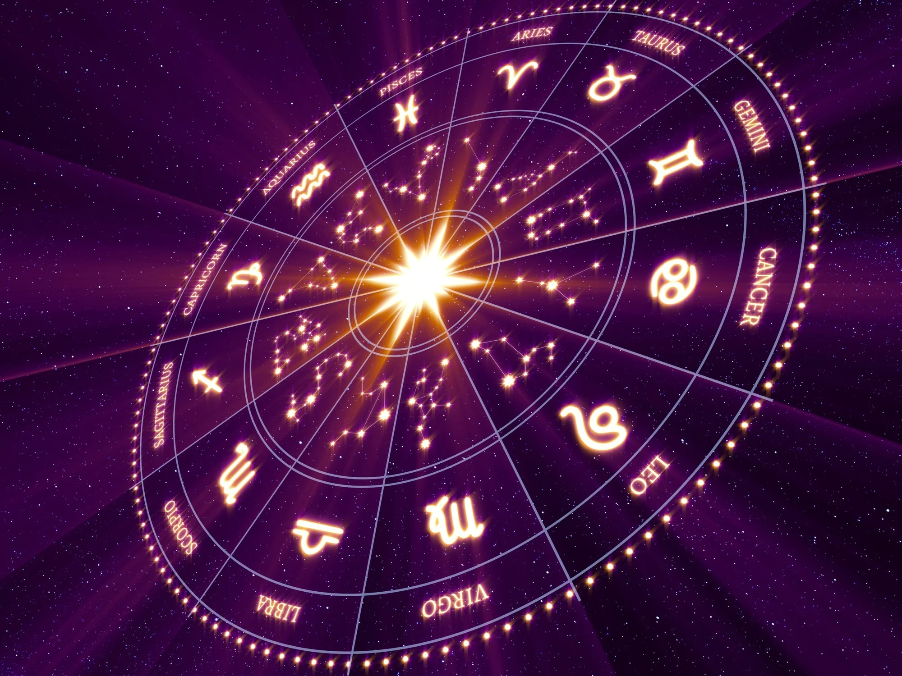

Tu fortuna para este 2023 según tu signo
Este 2023 la entrada de Júpiter a Aries hace que sea justamente el año de este signo, que lo va a estar compartiendo con Tauro.
Hay muchos cambios planetarios importantes: Plutón deja a Capricornio y entra a Acuario; Saturno deja Acuario y entra a Piscis. Y eso hace que los 12 signos reciban diferentes energías.
El año de Aries
Este es el año de Aries porque Júpiter, desde el 20 de diciembre de 2022, está visitando este signo. Este planeta optimista y justiciero es el que nos permite designar el 2023 como el Año de Aries.
En su pasaje en el primer semestre por Aries y en el segundo semestre por Tauro nos brinda la magia de recomenzar, ordenar y avanzar para luego concretar y hacer crecer nuestras arcas.
En ese marco, las claves para este año son: aprender a administrar la energía ariana, conducir toda esa capacidad de inicio y competencia hacia donde debemos, evitando los conflictos. Aprender a ser autosuficientes, entender que dependemos sólo de nosotros mismos. Es un año para no ponernos excusas.
Horóscopo 2023 para Aries:
Es tu año. Por lo tanto, tenés que avanzar, pensar. La palabra clave para vos es planificación, porque el segundo semestre tenés que contactar con tus recursos y pensar qué vas a hacer y con qué lo vas a hacer.
Horóscopo 2023 para Tauro:
Los primeros seis meses, con calma, sin preocuparte demasiado, tomándote las cosas con mucha tranquilidad. No hagas cambios rotundos. Esa es la clave para este primer semestre. En el segundo semestre, con la llegada de Júpiter, el optimismo va a estar de tu lado. Vas a ver cambios positivos en todos los aspectos de tu vida. Cerrá ciclos y abandoná las cargas.
Horóscopo 2023 para Geminis:
La transformación, la locura, el cambio. ¿Queré cambiar y no sabés qué? Lo que se te ocurra, lo que quieras cambiar lo tenés que cambiar ahora, en estos primeros seis meses. Porque en el segundo semestre hay que mantener la calma. Cuando Júpiter está en Tauro no hay que hacer cambios. Lo principal es que te encuentres con vos mismo.
Horóscopo 2023 para Cancer:
Es el año donde vas a encontrar un gran empujón a nivel profesional. Vas a estar parado sobre tu realidad. Te vas a dar cuenta de que todo lo que hiciste hasta ahora valió la pena. En el segundo semestre la propuesta es totalmente diferente. Aquello que no sirvió lo dejo para reencarnarme, tomar otro rumbo, seguir por otro camino.
Horóscopo 2023 para Leo:
Va a ser un año espectacular. La energía de Júpiter desde Aries es muy favorable para los y las leoninas. Vas a sentir un gran empujón a nivel personal, a nivel romántico, a nivel profesional. La segunda mitad es la cima de la montaña. Todo lo que soñaste se hace realidad y lográs concretarlo.
Horóscopo 2023 para Virgo:
Momento de transformaciones. Es tiempo de hacer cambios fundamentales y, sobre todo, prestar atención a lo que verdaderamente querés hacer. La segunda mitad del año será excelente. Júpiter desde Tauro es un gran aliado, permitiéndote llegar a lo que vos se te ocurra.
Horóscopo 2023 para Libra:
El año de Aries, tu opuesto complementario, te propone asociarte, encontrarte, casarte y separarte. Todo lo que tenga que ver con el otro es bien recibido. En la segunda mitad llegan buenas noticias. Herencias, legados y recompensas.
Horóscopo 2023 para Escorpio:
Es el momento de ver con qué querés quedarte. Es tiempo de cuidarte, cuidar tu salud e ir al médico, porque la segunda mitad del año viene con todo: grandes asociaciones, recompensas y seguramente algún premio que estabas esperando.
Horóscopo 2023 para Sagitario:
Estás muy, pero muy bien. Júpiter desde Aries te permite recrearte, jugar, divertirte, disfrutar. Amores prohibidos aparecen en tu vida. Es probable que tengas que hacer cambios profundos en lo cotidiano.
Horóscopo 2023 para Capricornio:
Capricornio tiene un año excelente. Te estás viendo súper bien porque es el gran momento para vos. Es el momento de difundir lo que hacés, de lograr el territorio que necesitás. En la segunda mitad del año todo sigue igual de bien, con desarrollo y creatividad.
Horóscopo 2023 para Acuario:
Estuviste muy exigido. Sentías que las cosas no salían bien. Ahora sentís una gran calma. La segunda mitad del año es para disfrutarla porque puede venir algún viajecito y algunas cosas nuevas.
Horóscopo 2023 para Piscis:
Este es el momento de disfrutar de lo económico. El dinero empieza a fluir, las recompensas económicas empiezan a aparecer y seguramente tengas ese trabajo que tanto soñabas. En la segunda mitad del año aparecen algunos viajes. También puede también venir una mudanza que seguramente era la que estabas proyectando hace mucho tiempo y no se daba.
Conoce en que areas te afecta el horoscopo calculando tu carta natal aca